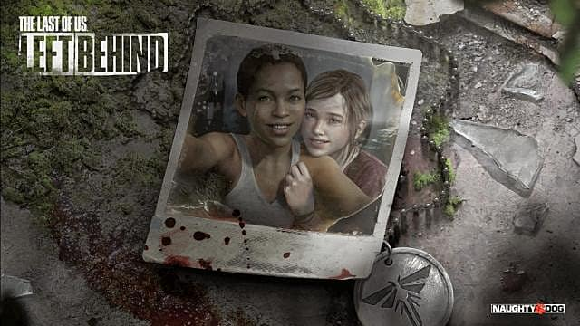

Historia
Resumen THE LAST OF US
En Septiembre de 2013, se ha desatado una pandemia en Estados Unidos ante la aparición repentina de una variación mutada de la cepa del hongo Cordyceps el cual afecta a los humanos convirtiéndolos en horrorosas criaturas caníbales que atacarán a cualquiera que no esté infectado para propagar el virus mediante un mordisco. En este escenario tan perturbador, Joel, su hija Sarah y su hermano Tommy, se disponen a abandonar su hogar en los suburbios de la ciudad de Austin en Texas ante la histeria colectiva producida por la pandemia. Cuando salían de su casa, un oficial del ejército, creyendo que Sarah estaba infectada, le dispara a esta última matándola dejando a ambos hermanos consternados.
Resumen LEFT BEHIND
La historia de Ellie y Joel, arrastrados por un mundo post-apocalíptico que ha sido destruido por una epidemia 'pseudo-zombie', nos puso los pelos de punta y nos hizo pasar algunas de las mejores horas frente a nuestras PS3 el pasado año 2013. Ahora, los chicos de Naughty Dog nos ofrecen dos horas más de experiencia en una especie de pre-cuela o historia paralela, o ambas (preferimos que eso lo descubran ustedes). En ella, la protagonista absoluta será nuestra querida Ellie, el único personaje jugable, aunque estará acompañada de su amiga Riley (amiga a la que todos recordaran si ya terminaste la campaña original de The Last of Us.). Gran parte de la acción transcurrirá en la zona de cuarentena de Boston, con las dos chicas explorando algunos lugares prohibidos al margen de la ley imperante, como el Liberty Garden, un enorme centro comercial abandonado. Y cuando decimos la 'acción', pues es una forma de hablar, porque acción no hay mucha, que digamos. El DLC no se centra en los combates o en las secuencias de acción, sino en los personajes, sus fantásticas conversaciones (los diálogos con Riley no desmerecen aquellos míticos que vivimos con Joel), los juegos interactivos entre las dos adolescentes y la historia de Ellie. Pero el DLC está cargado de sorpresas, lo prometemos, y momentos épicos que explican algunas cosas pendientes y son exclusivos del DLC. Un nuevo Comienzo El juego comienza mostrando las escenas del enfrentamiento entre los protagonistas y el grupo del juego, luego del prólogo comienza nuestra aventura como Ellie buscando medicamentos en el centro comercial para ayudar a Joel, después de buscar en la farmacia descubre un helicóptero donde decide buscar un botiquín, luego de encontrarlo se dirige con Joel y Callus, donde descubre al grupo de hombres de David luchando con un infectado que asesina a uno de ellos que estaba armado con un arco y flecha (que termina obteniendo Ellie) Los enemigos localizan a Joel gracias a los ruidos de Callus e intentan entrar, Ellie se enfrenta a ellos y luego de asesinarlos consigue un rifle. Llegan mas hombres con los que lucha, luego de vencerlos va con Joel para coser su herida. Quedó Atrás... Ellie se encuentra durmiendo en su cuarto cuando Riley entra fingiendo ser un infectado y la asusta, luego de conversar ambas salen con destino a un centro comercial al que ya habían ido en otras ocasiones y realizan varias actividades. El paseo resulta ser una despedida preparada por Riley, que será trasladada a otra zona. Cuando se lo revela a Ellie, esta finge que no le molesta, pero más tarde le pide que no vaya. Riley tira su colgante de identificación al suelo, decidida y Ellie la besa en un impulso. En ese momento son interrumpidas por infectados y escapan. Al final son acorraladas y, en un combate cuerpo a cuerpo consiguen eliminarlos, pero cada una se lleva una mordida.
Resumen THE LAST OF US PARTE 2
.jpg)
La historia comienza con Joel y Tommy patrullando cerca de Jackson, y le cuenta a Tommy exactamente lo que sucedió en el Hospital St. Mary en Salt Lake City. Después de explicar que había matado a todas las luciérnagas para salvar a Ellie, Joel y Tommy regresan a Jackson. De vuelta en la ciudad, Tommy le dice a Joel que probablemente habría hecho lo mismo en su posición y que se llevará este secreto a la tumba si es necesario. Más tarde, Joel visita a Ellie en su habitación y toca Pearl Day's Future Days para Ellie en una guitarra que encontró. Él entrega la guitarra y acuerdan tener sus primeras lecciones de guitarra la noche siguiente. Después de eso, avanzamos rápidamente cuatro años después cuando Ellie se despierta por la mañana para ir a patrullar. Nos encontramos con Jesse, y los dos hablan de la noche que Ellie tuvo antes. Nos enteramos de que ella había besado a Dina durante el baile del restaurante, y Seth los llamó a ambos un término despectivo, lo que hizo que Joel interviniera y Ellie se enojara con él por interferencia.